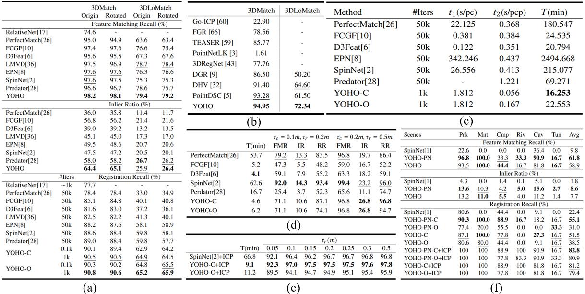

1Wuhan University 2The University of Hong Kong 3Texas A&M University *The first two authors contribute equally. †Corresponding authors.
In this paper, we propose a novel local descriptor-based framework, called You Only Hypothesize Once (YOHO), for the registration of two unaligned point clouds. In contrast to most existing local descriptors which rely on a fragile local reference frame to gain rotation invariance, the proposed descriptor achieves the rotation invariance by recent technologies of group equivariant feature learning, which brings more robustness to point density and noise. Meanwhile, the descriptor in YOHO also has a rotation-equivariant part, which enables us to estimate the registration from just one correspondence hypothesis. Such property reduces the searching space for feasible transformations, thus greatly improving both the accuracy and the efficiency of YOHO. Extensive experiments show that YOHO achieves superior performances with much fewer needed RANSAC iterations on four widely-used datasets, the 3DMatch/3DLoMatch datasets, the ETH dataset and the WHU-TLS dataset.
Fig.1. (a) The key idea of YOHO is to utilize orientations of local patches to find the global alignment of partial scans. (b) YOHO is able to automatically integrate partial scans into a completed scene, even these partial scans contain lots of noise and significant point density variations. (c) A figure of successful registration rate and average time cost to align a scan pair on the 3DMatch/3DLoMatch dataset. YOHO is more efficient and accurate than previous methods.

Fig.2. Quantative results of YOHO trained on 3DMatch-train (Indoor). (a) Comparison with feature-based methods on the indoor 3DMatch/3DLoMatch datasets. (b) Comparison with direct registration methods on 3DMatch/3DLoMatch. (c) Time consuming on 3DMatch/3DLoMatch. (d/e) Direct generaliztion to outdoor ETH dataset. (f) Direct generaliztion to outdoor WHU-TLS dataset. It can be observed that YOHO consistently achieves SOTA performances with less time consuming.
Fig.3. (a) The rotation invariant part of YOHO-Desc is more robust to sampling and noise. (b) The usage of rotation equivariant part of YOHO-Desc brings much faster convergence in RANSAC.
Fig.4. (Left) Qualitative comparison with baselines. (Right) Completed scenes by YOHO and some input partial scans.
@inproceedings{wang2022you,
title={You only hypothesize once: Point cloud registration with rotation-equivariant descriptors},
author={Wang, Haiping and Liu, Yuan and Dong, Zhen and Wang, Wenping},
booktitle={Proceedings of the 30th ACM International Conference on Multimedia},
pages={1630--1641},
year={2022}
}
YOHO has been extended to TPAMI 2023, called RoReg !
Welcome to take a look at the homepage of our research group WHU-USI3DV ! We focus on 3D Computer Vision, particularly including 3D reconstruction, scene understanding, point cloud processing as well as their applications in intelligent transportation system, digital twin cities, urban sustainable development, and robotics.